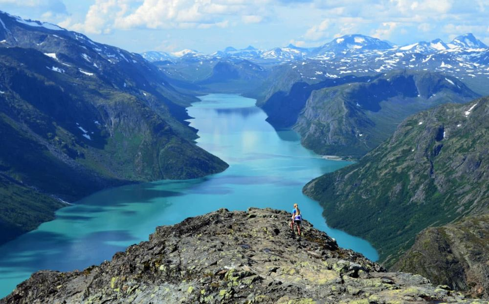

Descoperă Munții Jotunheimen - Vârfuri înzăpezite și peisaje sălbatice
Munții Jotunheimen reprezintă cel mai înalt lanț muntos din Norvegia, oferind aventuri în natură de neuitat:
-

Vârfuri impunătoare
Jotunheimen găzduiește cele mai înalte vârfuri din Norvegia, oferind oportunități pentru alpinism și drumeții deosebite.
-

Lacuri cristaline
Peisajul este punctat de lacuri glaciare și alpine, oferind priveliști deosebite înconjurate de munți.
-

Trasee de drumeții
Reteaua extinsă de trasee de drumeții oferă explorări pentru toate nivelurile de experiență.
-

Faună sălbatică
Jotunheimen este casa unor specii de animale sălbatice, precum renii și zimbrii.
-

Cabane pentru cazare
Rețeaua de cabane de munte oferă opțiuni pentru cazare și odihnă în mijlocul naturii sălbatice.
Concluzii
Munții Jotunheimen sunt destinația perfectă pentru iubitorii de natură și aventură, oferind oportunități de a explora peisaje spectaculare și sălbatice.